文本
试题
题尾
卷尾
其他
页面布局

级别 | 考点和演练 | 题型 | 考查内容 |
1级 | 机械波的图像 | 选择题/计算题 | 机械波图像分析 |
2级 | 波振关系 | 选择题/计算题 | 机械波和振动综合 |
3级 | 波的多解 | 选择题/计算题 | 波传播的分类讨论 |
4级 | 单摆测重力加速度 | 实验题 | 利用单摆测量重力加速度 |

简谐振动的振动图像 | 机械波的波动图像 | ||
图像 | 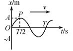 | 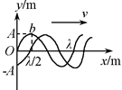 | |
函数 关系 | 一个质点做简谐运动时，它的位移随时间变化的关系 | 它在某一时刻各个质点的位置所形成的图线（横波） | |
坐 标 | 横轴 | 一个质点振动的时间 | 各质点的平衡位置（距离） |
纵轴 | 一个质点不同时刻相对平衡位置位移 | 同一时刻，各质点相对各自平衡位置的位移 | |
形状 | 正弦函数或余弦函数的图像 | ||
可直观得到的数据 | 周期 振幅 | 波长 振幅 波峰及波谷的位置 | |
图像上某一点 的意义 | 在某时刻（横轴坐标）做简谐运动的物体相对平衡位置的位移（纵轴坐标） | 在某时刻，距坐标原点的距离一定（横轴坐标）的该质点的位移（纵坐标） | |

一列简谐横波沿
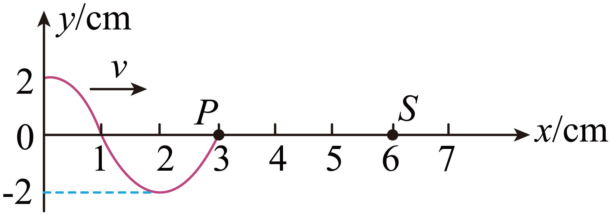

如图为一列简谐横波在t=0.10s时刻的波形图，P是平衡位置为x=1m处的质点，Q是平衡位置为x=4m处的质点，质点Q的振动方程为
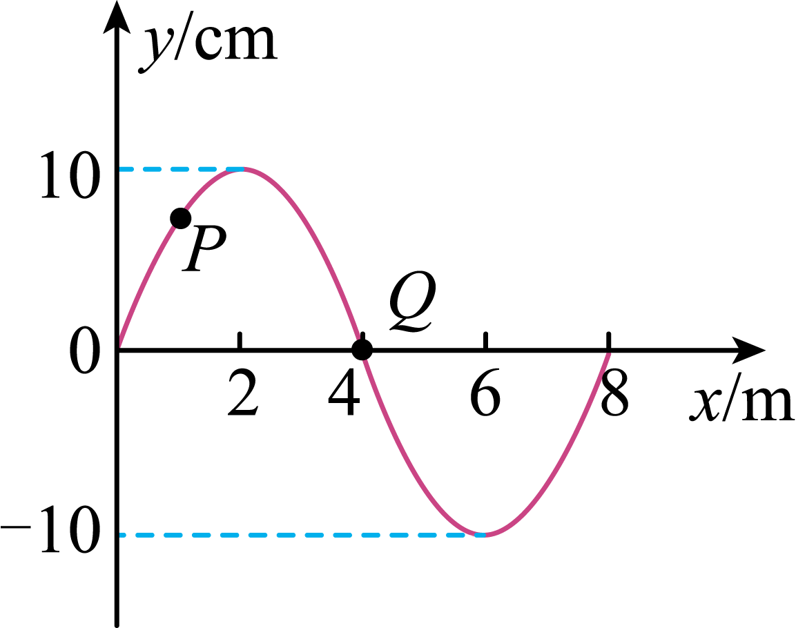
―列简谐横波在x轴上传播，某时刻的波形如图所示，a、b、c为波上的三个质点，质点a此时向上运动。由此可知（ ）
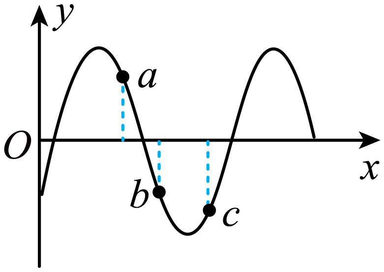
一列简谐横波在
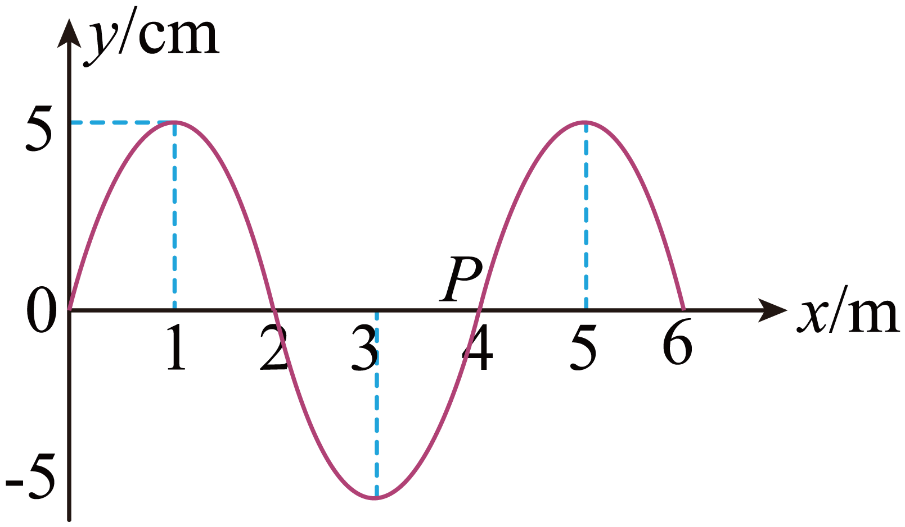
由如图确定这列波的波长
求这列波的波速
试判定这列波的传播方向．
如图甲为一列简谐横波在
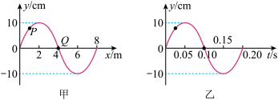
一列简谐横波在均匀介质中沿
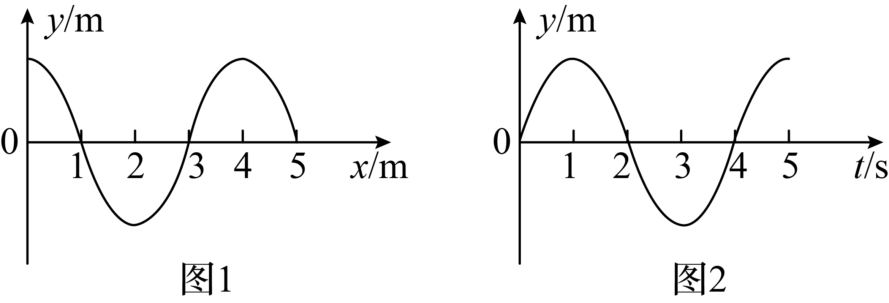
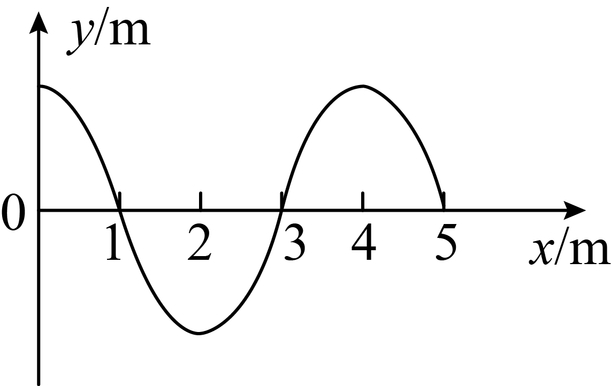
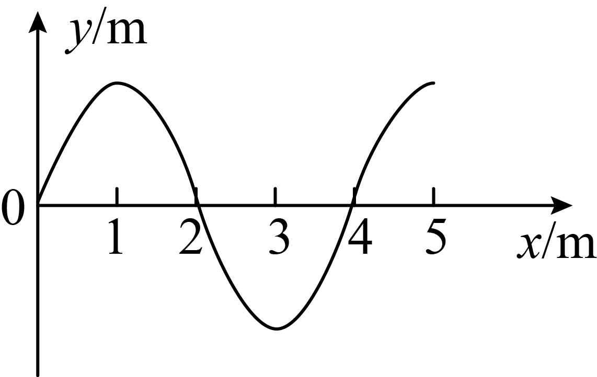
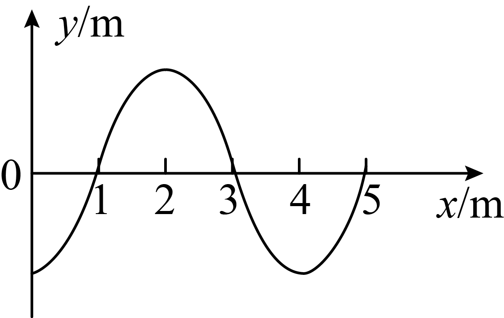
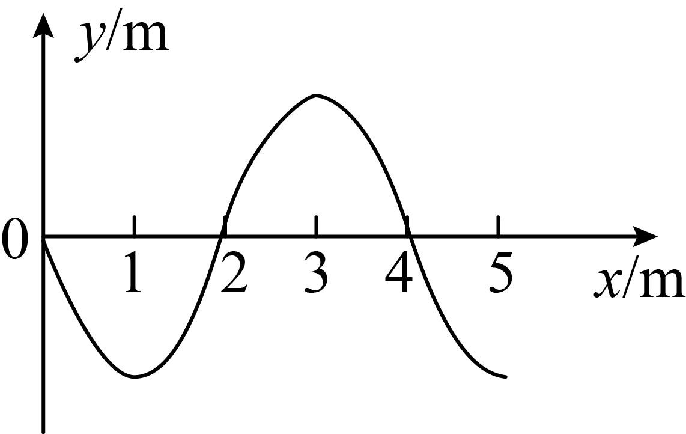
图（a）为一列简谐横波在t
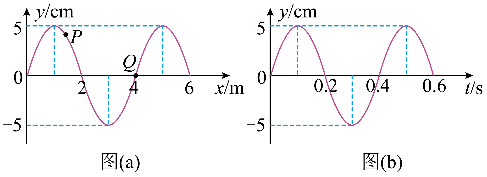
一列简谐横波沿x轴正方向传播，波传播到x＝6 m的质点M时的波形图如图1所示，N是x＝9 m处的质点．图2是从此时刻开始计时质点M的振动图像．求：
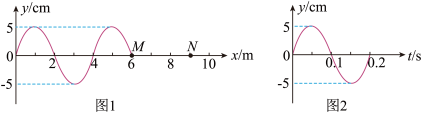
这列波的波长、周期和波速；
质点M在前2s内运动的路程s；
波从M点传到N点所用的时间，并判断质点N开始振动的方向．
如图所示，一列简谐横波沿
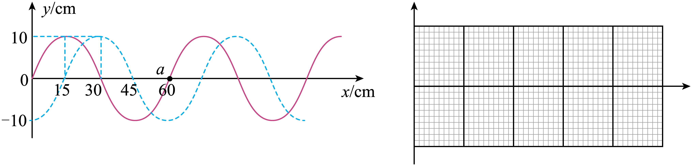
求该波的振幅
求该波的波速
以实线波形对应的时刻表示
如图所示，一列简谐横波向右传播，P、Q两质点平衡位置相距0.15 m．当P运动到上方最大位移处时，Q刚好运动到下方最大位移处，则这列波的波长可能是（ ）
如图所示，一列简谐横波在x轴上传播，图甲和图乙分别为x轴上a、b两质点的振动图像，且xab为6m．这列波的波长与波速可能的数值是（ ）
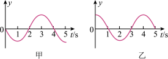
λ=24m
λ=8m
v=1.2m/s
v=0.2m/s
一列简谐横波在沿x轴方向传播．在
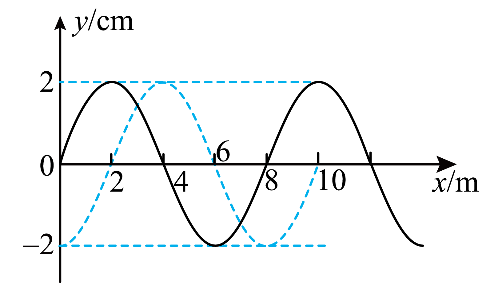
这列波的波长
这列波可能的波速：
若波速为280m/s，从
用如图所示的实验装置进行“用单摆测定重力加速度”的实验．
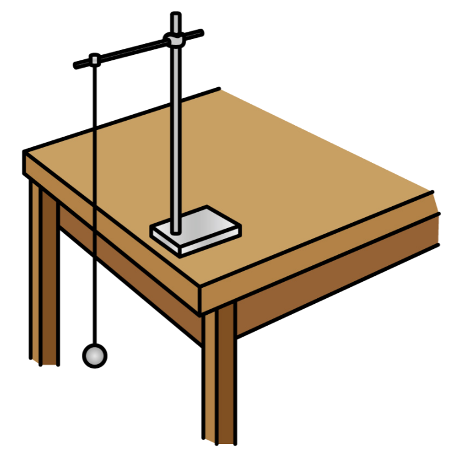
器材和装置
实验时除用到秒表、刻度尺、铁架台外，还应该选用下面列出的器材中 （选填选项前的字母代号）以备完成装置搭建．
长约
长约
长约
直径约
直径约
选择好器材，将符合实验要求的摆球用细线悬挂在铁架台横梁上，图25甲、乙分别画出了细线上端的两种不同的悬挂方式，你认为图 （选填“甲”或“乙”）的悬挂方式较好．
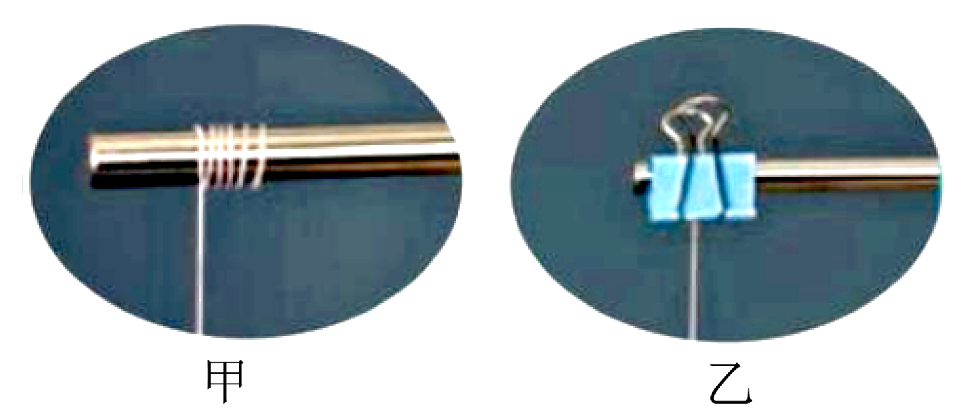
为完成实验，他们用刻度尺测量摆线长度
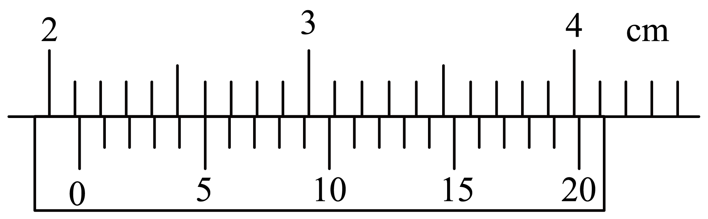
关于本实验下列说法正确的是 ．
需要用天平称出小球的质量
实验时须使摆球在同一竖直面内摆动
测量周期时，应从摆球到达最高点时开始计时
为了方便测量，摆长一定的情况下，摆的振幅越大越好
为节约时间，经过一次全振动后停止计时，用此时间间隔作为单摆振动的周期
如图所示，小欣同学用标准的实验器材和正确的实验方法测量出几组不同摆长
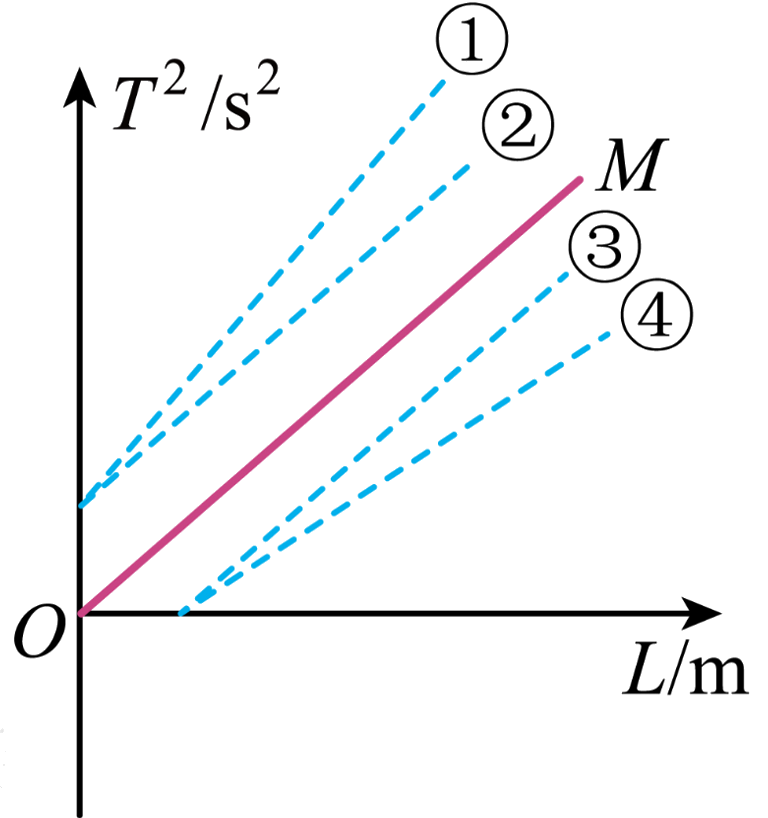
虚线①（不平行于实线
虚线②（平行于实线
虚线③（平行于实线
虚线④（不平行于实线
小艺同学利用双线摆和手机光传感器测量当地的重力加速度，如图所示，
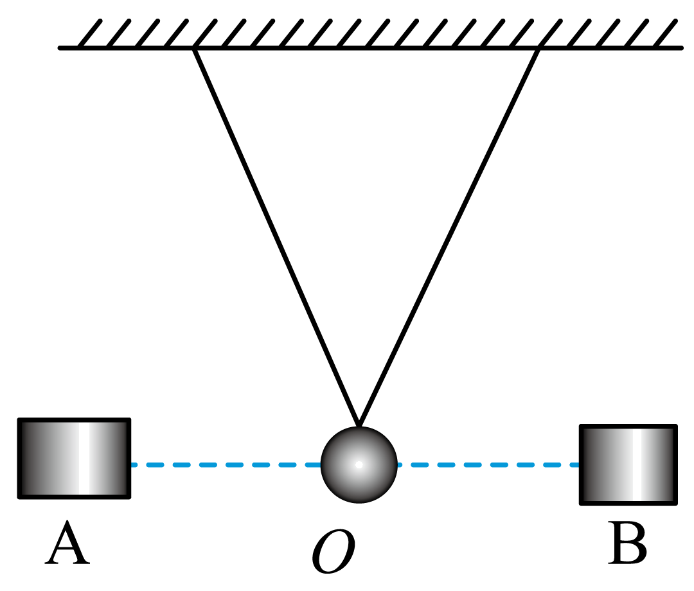
实验过程如下：
a．用游标卡尺测量小球的直径
b．测出位于同一水平高度的两悬点间的距离
c．拉动摆球使两根悬线所在平面偏离竖直方向一个较小角度，将摆球由静止释放，同时启动光传感器，得到光照强度随时间变化的图像如图所示，图中
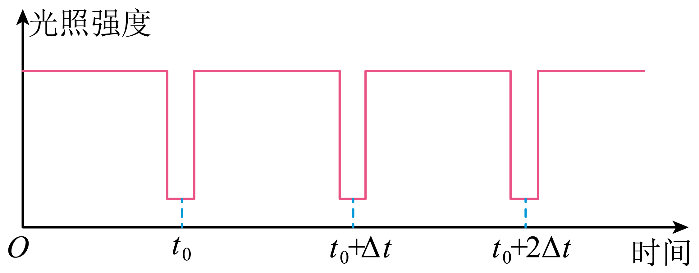
单摆测定重力加速度的实验中：
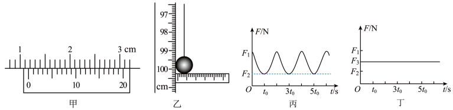
实验时用刻度尺测得悬点到小球底部的长度
以下是实验过程中的一些做法，其中正确的有 ．
摆线要选择细些的、伸缩性小些的，并且尽可能长一些
摆球尽量选择质量大些、体积小些的
为了使摆的周期大一些，以方便测量，开始时拉开摆球，使摆线相距平衡位置有较大的角度
拉开摆球，使摆线偏离平衡位置不大于5°，在释放摆球的同时开始计时，当摆球到开始位置时停止计时，此时间间隔
实验时用拉力传感器测得摆线的拉力F随时间t变化的图像如图丙所示，然后使单摆保持静止，得到如图丁所示的F-t图像．那么：
重力加速度的表达式g= （用题目中的物理量d、
②设摆球在最低点时
在实验中测得的g值偏小，可能原因是
实验中误将n次计为n-1次
开始计时时，停表过迟按下
以摆球直径和摆线长之和作为摆长来计算
摆线上端未牢固地系于悬点，振动中出现了松动，使摆线长度增加了使摆线长度增加了
某同学欲利用一半径较大的固定光滑圆弧面测定重力加速度，圆弧面如图1所示．该同学将小铁球从最低点移开一小段距离由静止释放，则小铁球的运动可等效为一单摆．
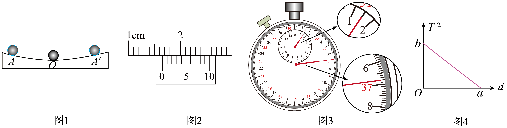
用游标卡尺测量小铁球直径，示数如图2所示，则小铁球的直径
测量小铁球的运动周期时，开始计时的位置为图1中的 （选填“
测量
更换直径不同的小铁球进行实验，正确操作，根据实验记录的数据，绘制的
某同学为减小实验误差用双线摆装置测量重力加速度．如图甲所示，用长度相同的细线AO、BO悬挂小球，并使小球在垂直于纸面的平面内摆动．
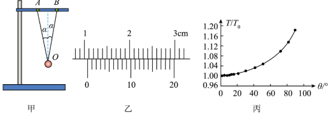
相比于双线摆装置，用单摆装置进行实验的劣势是________（填字母代号）。
该同学用游标卡尺测量小球的直径d，示数如图乙所示，则小球的直径
使小球垂直纸面做简谐运动，当小球经过最低点时开始计时并计数为1之后每隔一次小球经过最低点时计数加1，当计数到n时停止计时，历时t。则双线摆的振动周期
用刻度尺测得细线AO、BO的长度均为L，细线AO、BO与竖直方向的夹角均为α，则当地的重力加速度
该同学查阅资料得知，单摆做简谐运动的理论周期
一简谐横波沿
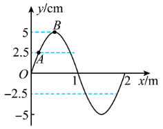
此时质点
经过
一列沿x轴传播的简谐横波，其周期T=0.20s，在t=0时的波形图像如图所示。其中P、Q是介质中平衡位置分别处在x=1.0m和x=4.0m的两个质点，若此时质点P在正向最大位移处，质点Q通过平衡位置向下运动，则（ ）
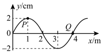
一列沿x轴传播的简谐横波，某时刻波形如图1所示，以该时刻为计时零点，
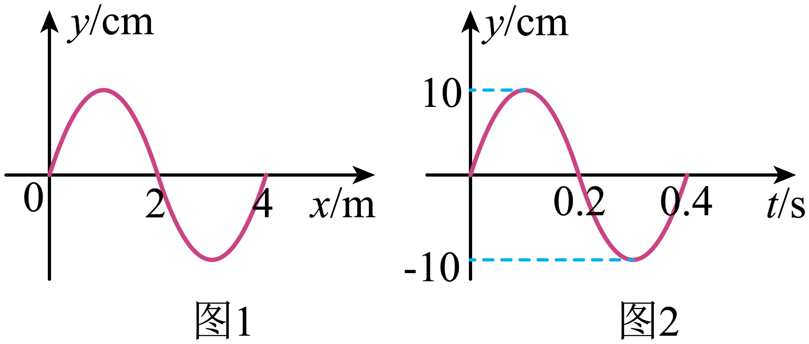
一列简谐横波沿直线由
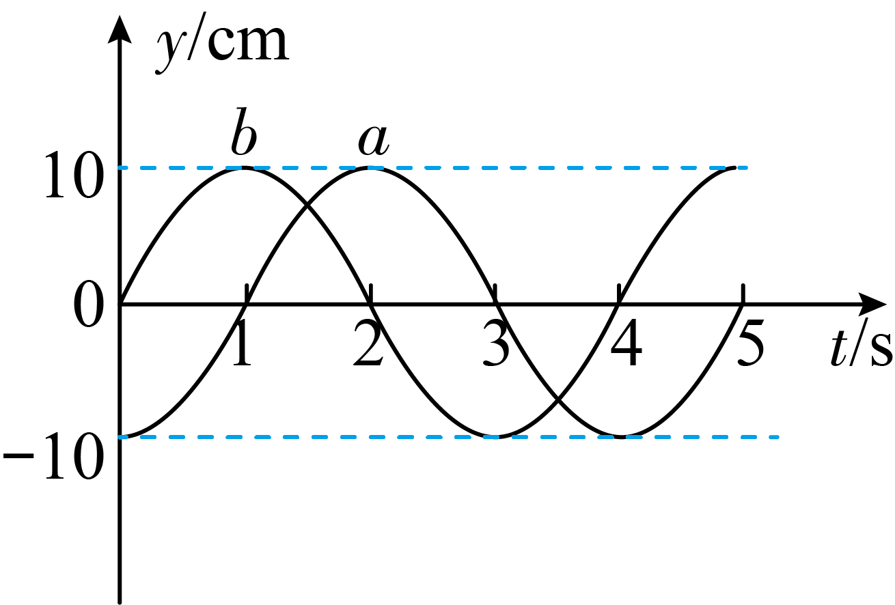
该波的振幅可能是
该波的波长可能是
该波的波速可能是
该波由
在“用单摆测定重力加速度”的实验中：甲同学用标准的实验器材和正确的实验方法测量出几组不同摆长L和周期T的数值，画出如图T2﹣L图象中的实线OM；乙同学也进行了与甲同学同样的实验，但实验后他发现测量摆长时忘了加上摆球的半径，则该同学作出的T2-L图像为（ ）
虚线①，不平行实线OM
虚线②，平行实线OM
虚线③，平行实线OM
虚线④，不平行实线OM
一列沿
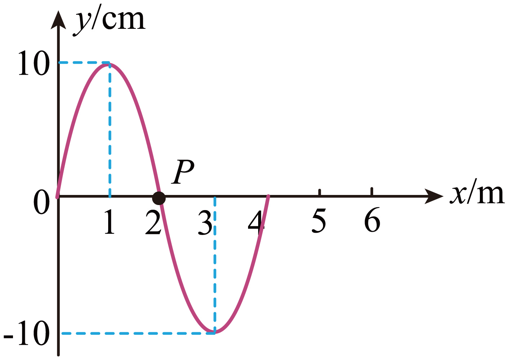
在坐标原点的波源产生一列沿x轴正方向传播的简谐横波，波速v=100m/s。已知t=0时，波刚好传播到x=40m处，如图所示，在x=200m处有一接收器（图中未画出）。则下列说法正确的是（ ）
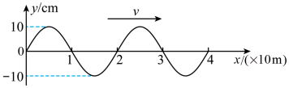
如图
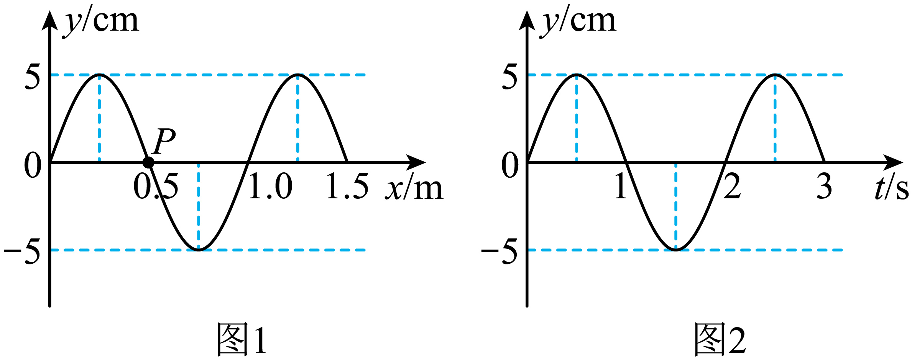
一列沿x轴传播的简谐横波，在t=0时的波形如图甲所示，P、Q是波上的两个质点，此时质点P沿y轴负方向运动。图乙是波上某一质点的振动图像。下列说法中正确的（ ）是
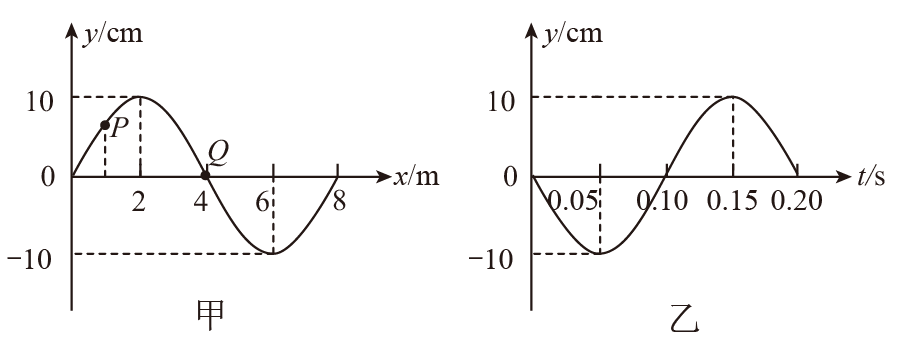
该波沿x轴负方向传播
图乙可能为Q点的振动图像
t=0.10s时，质点P沿y轴正方向运动
该波的波速为80m/s
如图所示，一列简谐横波向右传播，
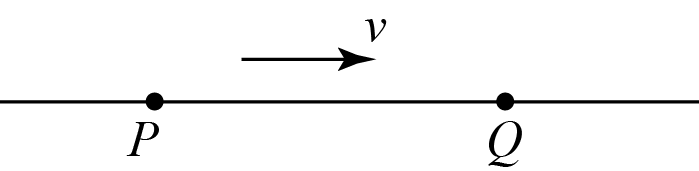
如图，一列简谐横波沿x轴正方向传播，t＝0时的波形如图中实线所示，t＝1s时的波形如图中虚线所示，P是波传播路径上的一个质点，下列说法正确的是（ ）
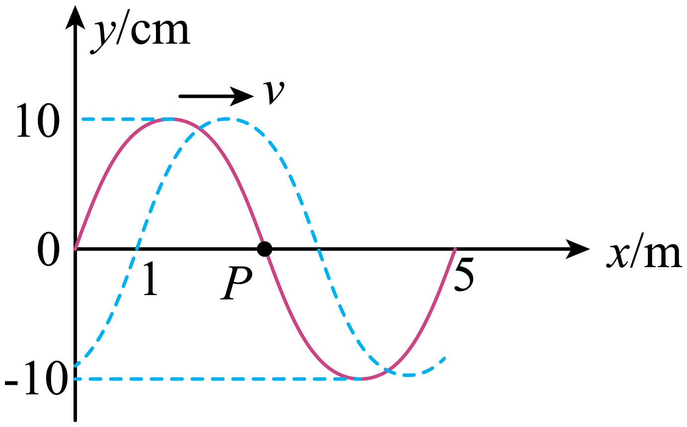
某同学做“用单摆测定重力加速度”的实验时，测得重力加速度的值较当地重力加速度的值偏大，可能的原因是（ ）
用单摆测量重力加速度实验中，用多组实验数据作出周期T的平方和摆长L的T2—L图线，可以求出重力加速度g。已知两位同学作出的
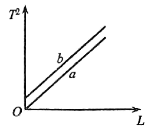
可能是误将绳长记为摆长L
可能是误将悬点到小球下端的距离记为摆长L
可能是误将51次全振动记为50次
根据图线b也能准确测出当地的重力加速度
下载设置
![]()